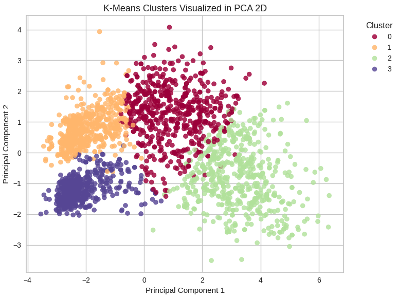

Customer Personality Segmentation

Resumen del proyecto
Cuando una empresa tiene miles de clientes, no puede tratarlos a todos igual. Algunos compran mucho, otros poco; algunos prefieren la tienda física, otros la web. El problema es cómo agruparlos de forma útil sin tener etiquetas previas. Eso es lo que intenté resolver en este proyecto: segmentar clientes en grupos diferenciados para que una empresa de retail pueda enfocar mejor sus estrategias de marketing.
Lo hice en el marco del programa de MIT IDSS, en el módulo Making Sense of Unstructured Data. El dataset tenía información de más de 2.000 clientes: edad, ingresos, estado civil, gasto por categoría de producto y respuesta a campañas. Primero hice un análisis exploratorio para entender los datos, después reduje las dimensiones con PCA y finalmente apliqué K-Means para encontrar los grupos.
Usé el método del codo y el coeficiente de Silhouette para decidir que 4 clusters eran lo más adecuado. Los cuatro grupos que encontré tienen perfiles bastante claros: compradores tradicionales con buen poder adquisitivo, familias con presupuesto ajustado que responden a ofertas, compradores digitales de alto valor, y clientes con poca actividad que necesitan reactivación.
Para cada segmento propuse acciones de negocio específicas, como programas de fidelización para los de alto valor y campañas de descuentos para los más sensibles al precio.